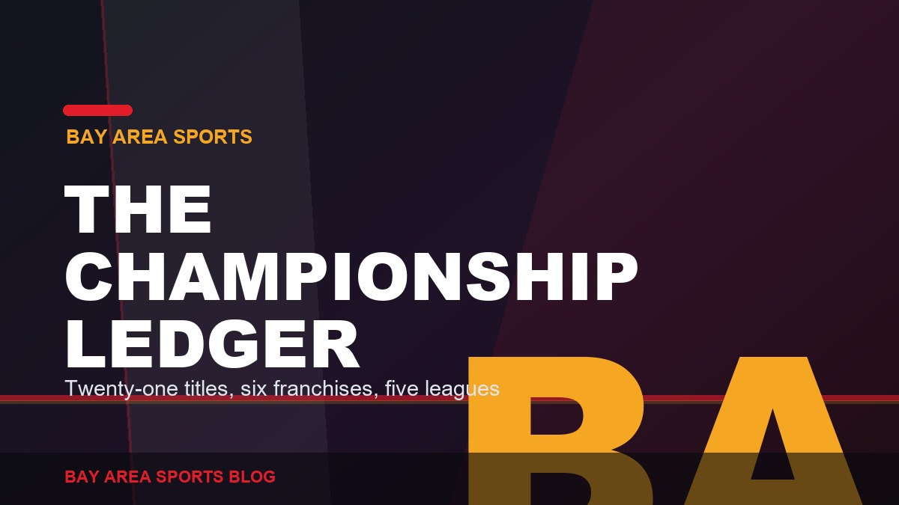
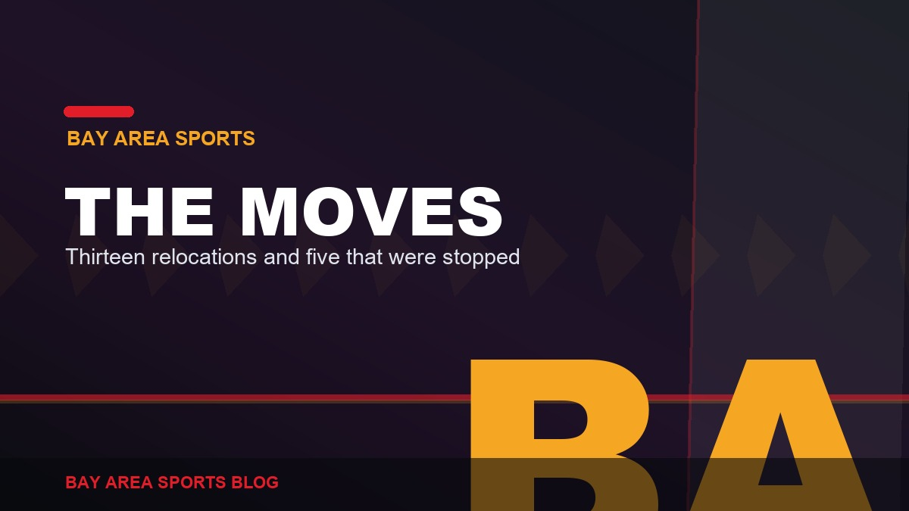
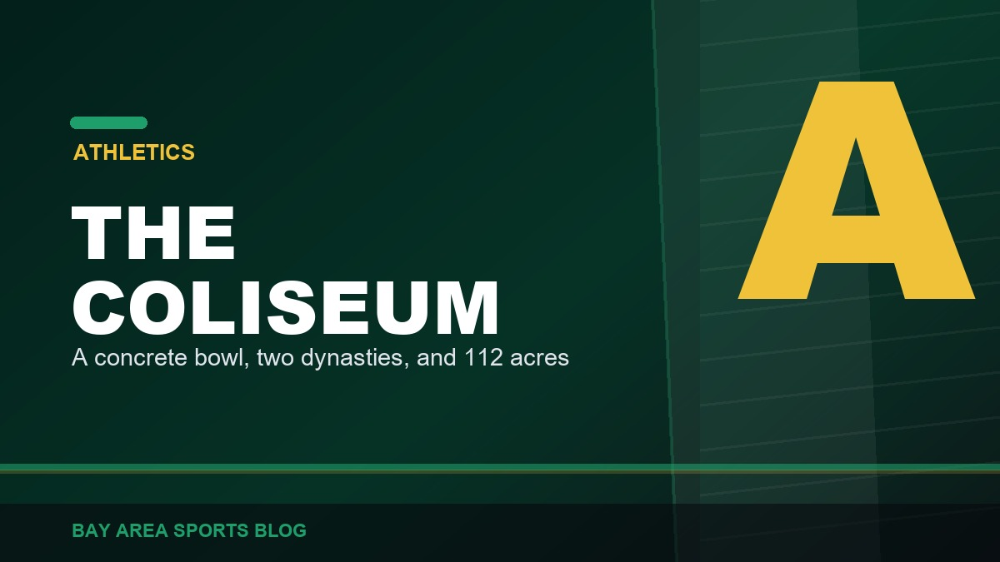
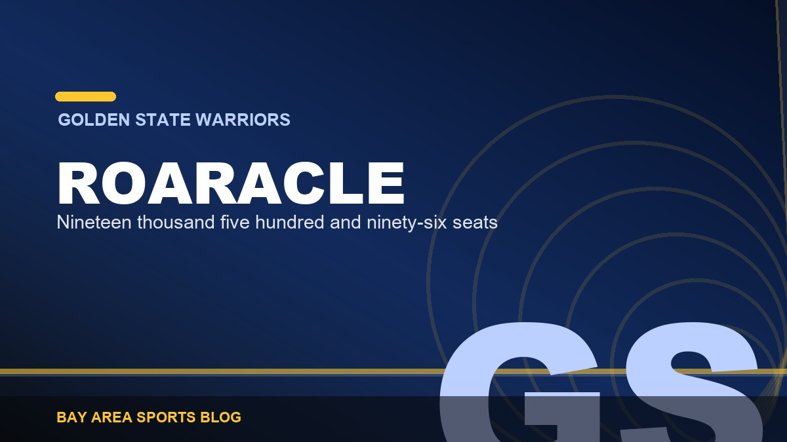

Bay Area Sports
Around the Bay
The Sharks, the Athletics, and the stories that stretch across the whole region, not just the big three.
BALatest


Bay Area history and reference

Bay Area History
Every Bay Area Championship, Team by Team
Twenty-one titles, six franchises, five leagues, with the years, the decades, and the ones that do not count.
Read

Bay Area History
Every Bay Area Franchise Move, and the Ones That Were Stopped
Thirteen completed relocations and five that were agreed and then blocked. The regional pattern, on one page.
Read

Bay Area History
The Oakland Coliseum: What It Was and What Happens to It Now
The 1966 opening, the Mount Davis mistake, the last game, and the $5 billion redevelopment of 112 acres.
Read

Bay Area History
Candlestick Park: The Wind, The Catch, and the End of the Stick
Fifty-five years on the windiest point in San Francisco, one earthquake, the Beatles’ last concert, and the site today.
Read

Bay Area History
Oracle Arena: How Roaracle Became the Loudest Building in the NBA
Opened 1966, 19,596 seats, three championships, and a farewell nobody in Oakland asked for, plus what is in the building now.
Read